import numpy as np
import pandas as pd
import matplotlib.pyplot as plt
Chapter # 06 (Part A)
Naive Bayes
Chapter # 06 (Part A)
Naive Bayes
Introduction
The Naive Bayes Classifier technique is based on the so-called Bayesian theorem and is particularly suited when the dimensionality of the inputs is high. Despite its simplicity, Naive Bayes can often outperform more sophisticated classification methods.
Bayes’ Theorem
The algorithm is based on the famous Bayes theorem named after Rev. Thomas Bayes. It works on conditional probability. Conditional probability is the probability that something will happen, given that something else has already occurred. Using the conditional probability, we can calculate the probability of an event using its prior knowledge.
Bayes’ theorem is stated mathematically as the following equation:
\[{\displaystyle P(A\mid B)={\frac {P(B\mid A)\,P(A)}{P(B)}},}\] where \(A\) and \(B\) are events and \(P(B)\neq{0}\).
\(P(A\mid B)\) is a conditional probability: the likelihood of event \(A\) occurring given that \(B\) is true.
\(P(B\mid A)\) is also a conditional probability: the likelihood of event \(B\) occurring given that \(A\) is true.
\(P(A)\) and \(P(B)\) are the probabilities of observing \(A\) and \(B\) independently of each other; this is known as the marginal probability.
What’s Naive in Naive Bayes and why is it a superfast algorithm?
It is called naive Bayes or idiot Bayes because the calculation of the probabilities for each hypothesis are simplified to make their calculation tractable. Rather than attempting to calculate the values of each attribute value, they are assumed to be conditionally independent given the target value.
This is a very strong assumption that is most unlikely in real data, i.e. that the attributes do not interact. Nevertheless, the approach performs surprisingly well on data where this assumption does not hold.
Training is fast because only the probability of each class and the probability of each class given different input values need to be calculated. No coefficients need to be fitted by optimization procedures.
The class probabilities are simply the frequency of instances that belong to each class divided by the total number of instances. The conditional probabilities are the frequency of each attribute value for a given class value divided by the frequency of instances with that class value.
Data analyzed in this notebook
In this notebook, we will show how to use Python scikit-learn’s Naive Bayes method to classify origin of wine based on physio-chemical analysis data. These data are the results of a chemical analysis of wines grown in the same region in Italy but derived from three different cultivars. The analysis determined the quantities of 13 constituents found in each of the three types of wines.
Details can be found here.
Read in the data and perform basic exploratory analysis
Data set
df = pd.read_csv('DATA/wine.data.csv')
df.head(10)| Wine | Alcohol | Malic.acid | Ash | Acl | Mg | Phenols | Flavanoids | Nonflavanoid.phenols | Proanth | Color.int | Hue | OD | Proline | |
|---|---|---|---|---|---|---|---|---|---|---|---|---|---|---|
| 0 | 1 | 14.23 | 1.71 | 2.43 | 15.6 | 127 | 2.80 | 3.06 | 0.28 | 2.29 | 5.64 | 1.04 | 3.92 | 1065 |
| 1 | 1 | 13.20 | 1.78 | 2.14 | 11.2 | 100 | 2.65 | 2.76 | 0.26 | 1.28 | 4.38 | 1.05 | 3.40 | 1050 |
| 2 | 1 | 13.16 | 2.36 | 2.67 | 18.6 | 101 | 2.80 | 3.24 | 0.30 | 2.81 | 5.68 | 1.03 | 3.17 | 1185 |
| 3 | 1 | 14.37 | 1.95 | 2.50 | 16.8 | 113 | 3.85 | 3.49 | 0.24 | 2.18 | 7.80 | 0.86 | 3.45 | 1480 |
| 4 | 1 | 13.24 | 2.59 | 2.87 | 21.0 | 118 | 2.80 | 2.69 | 0.39 | 1.82 | 4.32 | 1.04 | 2.93 | 735 |
| 5 | 1 | 14.20 | 1.76 | 2.45 | 15.2 | 112 | 3.27 | 3.39 | 0.34 | 1.97 | 6.75 | 1.05 | 2.85 | 1450 |
| 6 | 1 | 14.39 | 1.87 | 2.45 | 14.6 | 96 | 2.50 | 2.52 | 0.30 | 1.98 | 5.25 | 1.02 | 3.58 | 1290 |
| 7 | 1 | 14.06 | 2.15 | 2.61 | 17.6 | 121 | 2.60 | 2.51 | 0.31 | 1.25 | 5.05 | 1.06 | 3.58 | 1295 |
| 8 | 1 | 14.83 | 1.64 | 2.17 | 14.0 | 97 | 2.80 | 2.98 | 0.29 | 1.98 | 5.20 | 1.08 | 2.85 | 1045 |
| 9 | 1 | 13.86 | 1.35 | 2.27 | 16.0 | 98 | 2.98 | 3.15 | 0.22 | 1.85 | 7.22 | 1.01 | 3.55 | 1045 |
Basic statistics of the features
df.iloc[:,1:].describe()| Alcohol | Malic.acid | Ash | Acl | Mg | Phenols | Flavanoids | Nonflavanoid.phenols | Proanth | Color.int | Hue | OD | Proline | |
|---|---|---|---|---|---|---|---|---|---|---|---|---|---|
| count | 178.000000 | 178.000000 | 178.000000 | 178.000000 | 178.000000 | 178.000000 | 178.000000 | 178.000000 | 178.000000 | 178.000000 | 178.000000 | 178.000000 | 178.000000 |
| mean | 13.000618 | 2.336348 | 2.366517 | 19.494944 | 99.741573 | 2.295112 | 2.029270 | 0.361854 | 1.590899 | 5.058090 | 0.957449 | 2.611685 | 746.893258 |
| std | 0.811827 | 1.117146 | 0.274344 | 3.339564 | 14.282484 | 0.625851 | 0.998859 | 0.124453 | 0.572359 | 2.318286 | 0.228572 | 0.709990 | 314.907474 |
| min | 11.030000 | 0.740000 | 1.360000 | 10.600000 | 70.000000 | 0.980000 | 0.340000 | 0.130000 | 0.410000 | 1.280000 | 0.480000 | 1.270000 | 278.000000 |
| 25% | 12.362500 | 1.602500 | 2.210000 | 17.200000 | 88.000000 | 1.742500 | 1.205000 | 0.270000 | 1.250000 | 3.220000 | 0.782500 | 1.937500 | 500.500000 |
| 50% | 13.050000 | 1.865000 | 2.360000 | 19.500000 | 98.000000 | 2.355000 | 2.135000 | 0.340000 | 1.555000 | 4.690000 | 0.965000 | 2.780000 | 673.500000 |
| 75% | 13.677500 | 3.082500 | 2.557500 | 21.500000 | 107.000000 | 2.800000 | 2.875000 | 0.437500 | 1.950000 | 6.200000 | 1.120000 | 3.170000 | 985.000000 |
| max | 14.830000 | 5.800000 | 3.230000 | 30.000000 | 162.000000 | 3.880000 | 5.080000 | 0.660000 | 3.580000 | 13.000000 | 1.710000 | 4.000000 | 1680.000000 |
Boxplots by output labels/classes
for c in df.columns[1:]:
df.boxplot(c,by='Wine',figsize=(7,4),fontsize=14)
plt.title("{}\n".format(c),fontsize=16)
plt.xlabel("Wine Class", fontsize=16)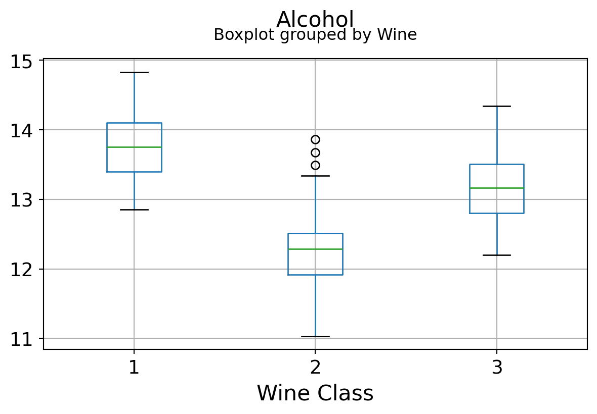
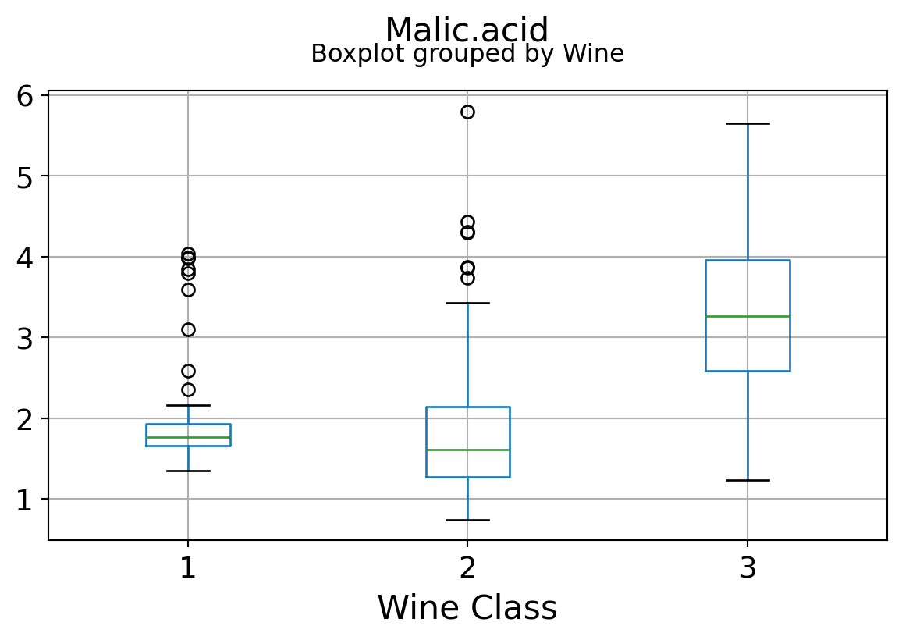
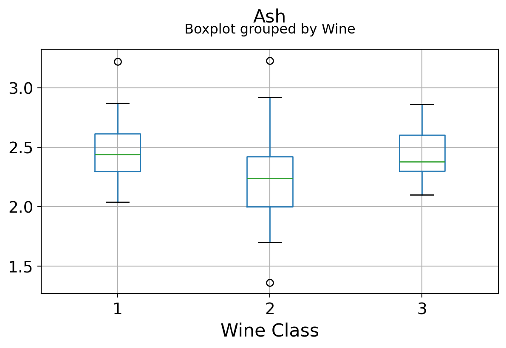
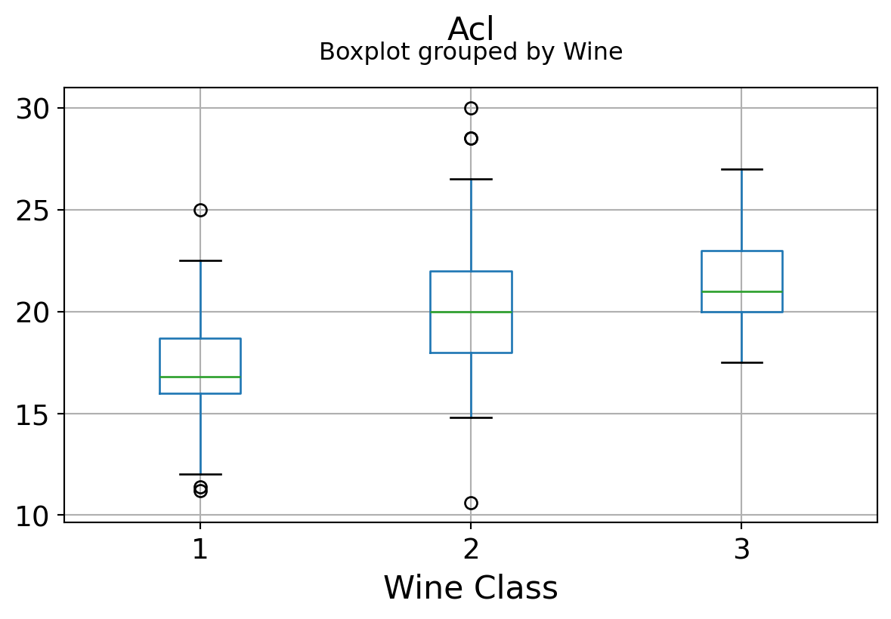
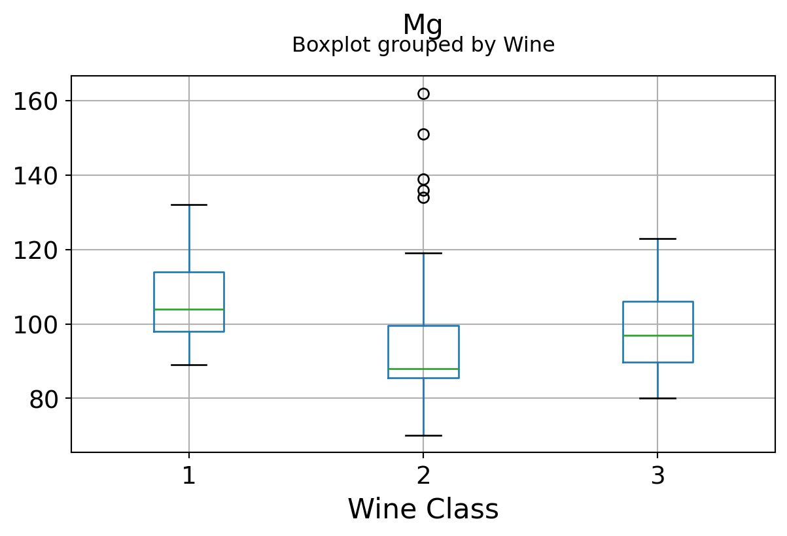
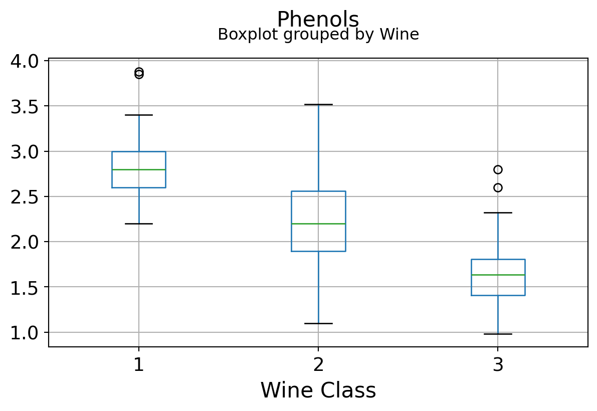
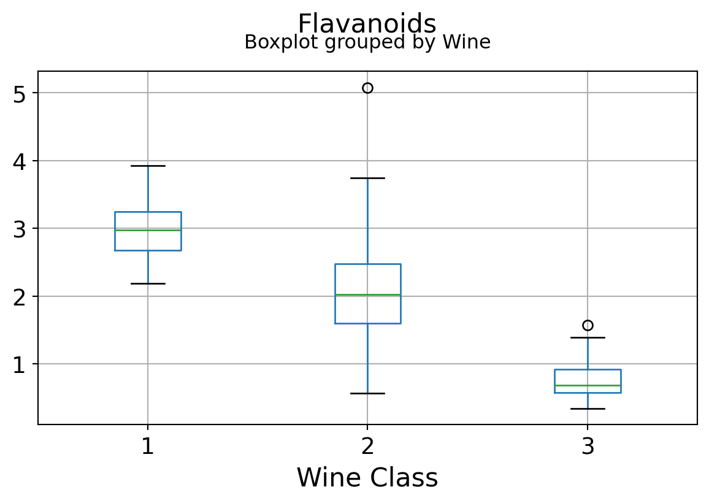
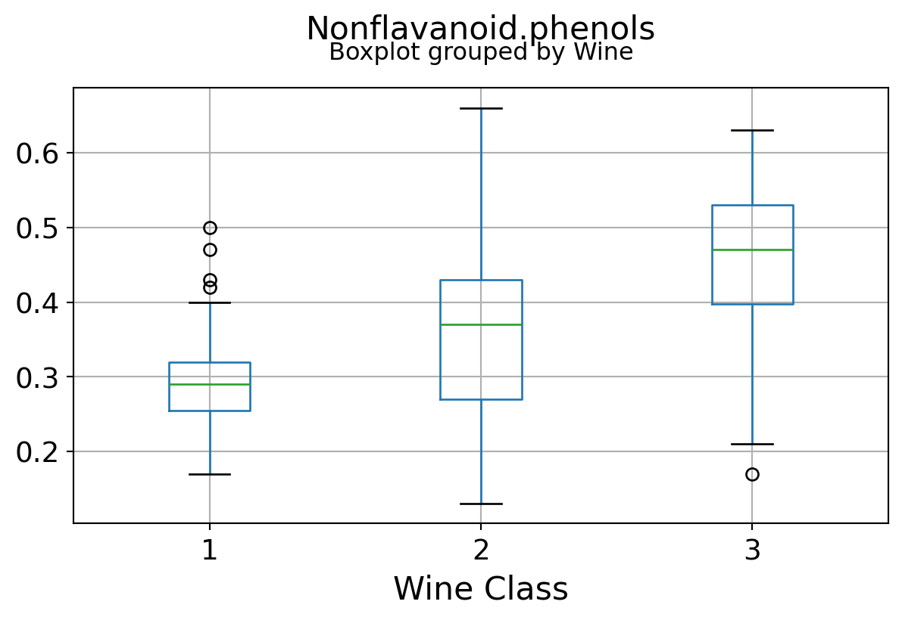
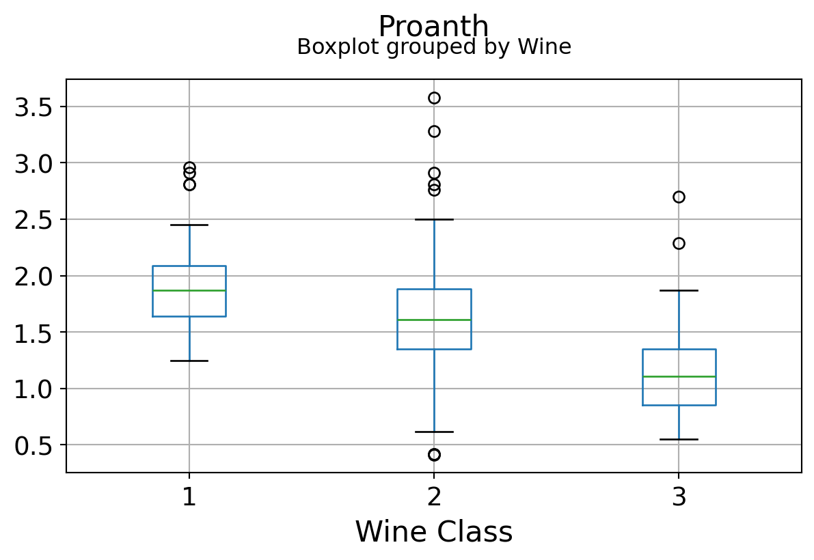
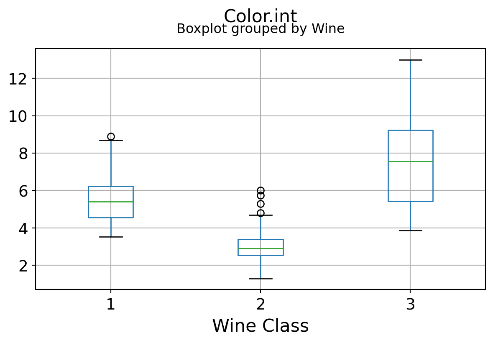
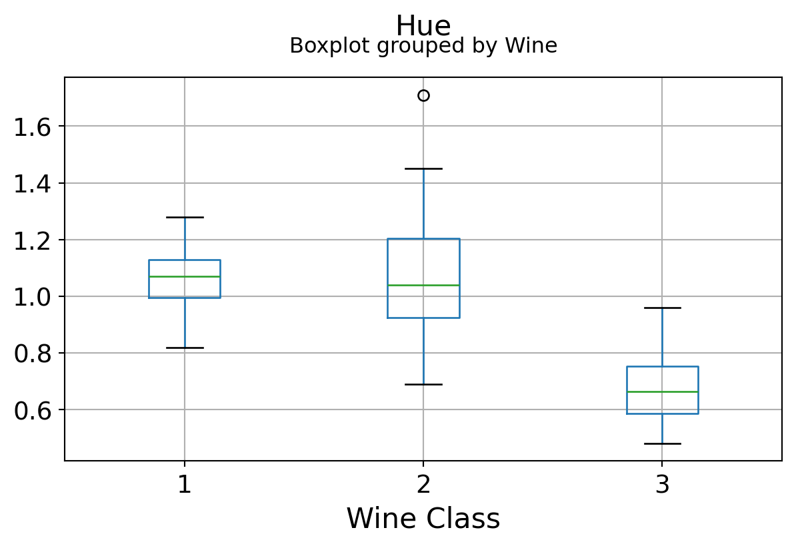
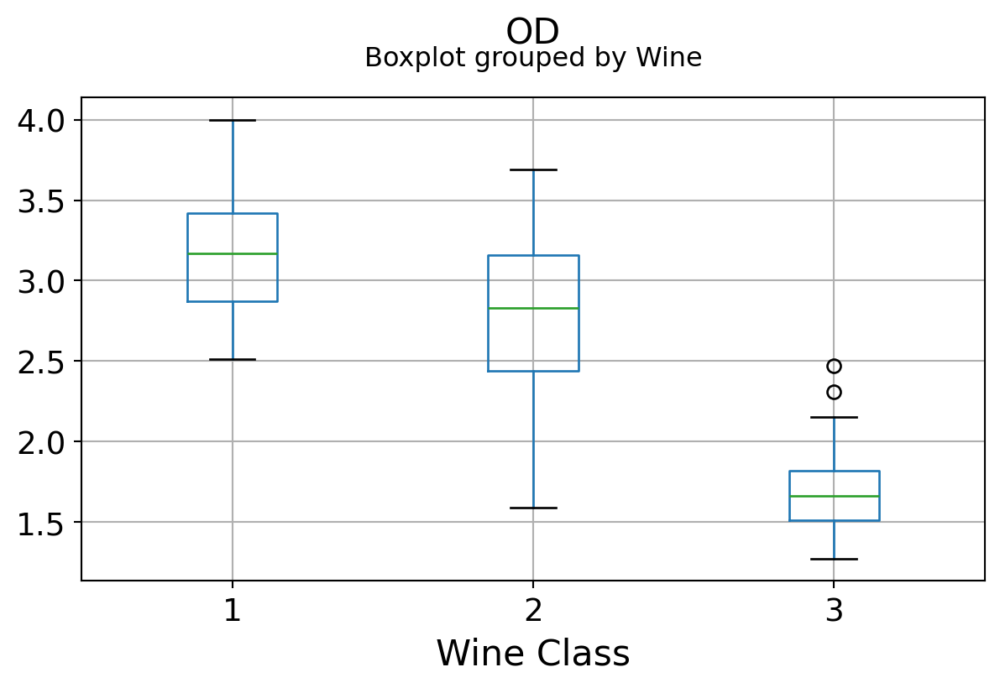
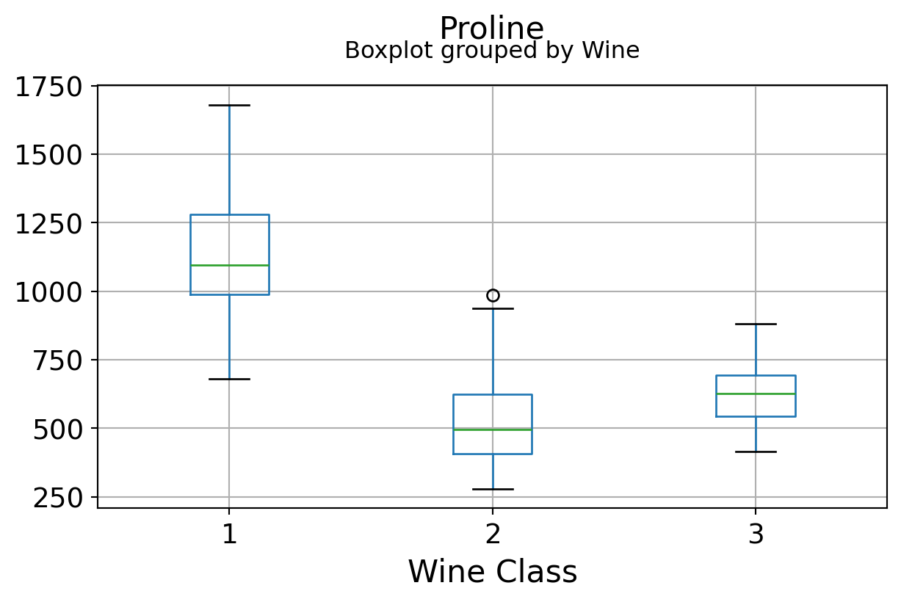
It can be seen that some features classify the wine labels pretty clearly. For example, Alcalinity, Total Phenols, or Flavonoids produce boxplots with well-separated medians, which are clearly indicative of wine classes.
Below is an example of class seperation using two variables
plt.figure(figsize=(10,6))
plt.scatter(df['OD'],df['Flavanoids'],c=df['Wine'],edgecolors='k',alpha=0.8,s=100)
plt.grid(True)
plt.title("Scatter plot of two features showing the correlation and class seperation",fontsize=15)
plt.xlabel("OD280/OD315 of diluted wines",fontsize=15)
plt.ylabel("Flavanoids",fontsize=15)Text(0, 0.5, 'Flavanoids')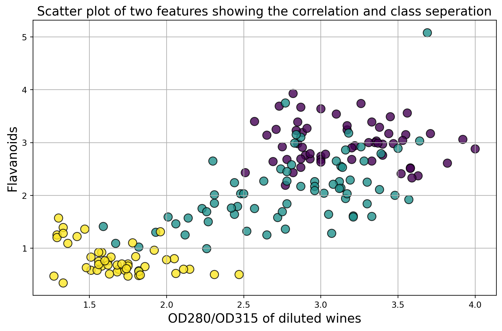
Are the features independent? Plot co-variance matrix
It can be seen that there are some good amount of correlation between features i.e. they are not independent of each other, as assumed in Naive Bayes technique. However, we will still go ahead and apply yhe classifier to see its performance.
def correlation_matrix(df):
from matplotlib import pyplot as plt
from matplotlib import cm as cm
fig = plt.figure(figsize=(16,12))
ax1 = fig.add_subplot(111)
cmap = cm.get_cmap('jet', 30)
cax = ax1.imshow(df.corr(), interpolation="nearest", cmap=cmap)
ax1.grid(True)
plt.title('Wine data set features correlation',fontsize=15)
labels=df.columns
ax1.set_xticklabels(labels,fontsize=9)
ax1.set_yticklabels(labels,fontsize=9)
# Add colorbar, make sure to specify tick locations to match desired ticklabels
fig.colorbar(cax, ticks=[0.1*i for i in range(-11,11)])
plt.show()
correlation_matrix(df)C:\Users\mshar\AppData\Local\Temp\ipykernel_21364\3096039824.py:7: MatplotlibDeprecationWarning: The get_cmap function was deprecated in Matplotlib 3.7 and will be removed in 3.11. Use ``matplotlib.colormaps[name]`` or ``matplotlib.colormaps.get_cmap()`` or ``pyplot.get_cmap()`` instead.
cmap = cm.get_cmap('jet', 30)
C:\Users\mshar\AppData\Local\Temp\ipykernel_21364\3096039824.py:12: UserWarning: set_ticklabels() should only be used with a fixed number of ticks, i.e. after set_ticks() or using a FixedLocator.
ax1.set_xticklabels(labels,fontsize=9)
C:\Users\mshar\AppData\Local\Temp\ipykernel_21364\3096039824.py:13: UserWarning: set_ticklabels() should only be used with a fixed number of ticks, i.e. after set_ticks() or using a FixedLocator.
ax1.set_yticklabels(labels,fontsize=9)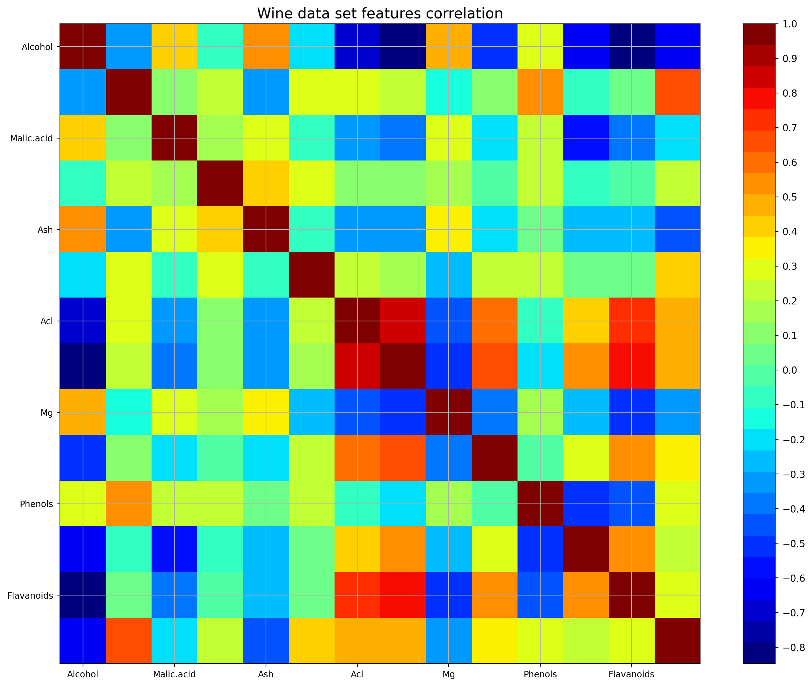
Naive Bayes Classification
Test/train split
from sklearn.model_selection import train_test_split
test_size=0.3 # Test-set fractionX = df.drop('Wine',axis=1)
y = df['Wine']
X_train, X_test, y_train, y_test = train_test_split(X, y, test_size=test_size)X_train.shape(124, 13)X_train.head()| Alcohol | Malic.acid | Ash | Acl | Mg | Phenols | Flavanoids | Nonflavanoid.phenols | Proanth | Color.int | Hue | OD | Proline | |
|---|---|---|---|---|---|---|---|---|---|---|---|---|---|
| 23 | 12.85 | 1.60 | 2.52 | 17.8 | 95 | 2.48 | 2.37 | 0.26 | 1.46 | 3.93 | 1.09 | 3.63 | 1015 |
| 156 | 13.84 | 4.12 | 2.38 | 19.5 | 89 | 1.80 | 0.83 | 0.48 | 1.56 | 9.01 | 0.57 | 1.64 | 480 |
| 154 | 12.58 | 1.29 | 2.10 | 20.0 | 103 | 1.48 | 0.58 | 0.53 | 1.40 | 7.60 | 0.58 | 1.55 | 640 |
| 63 | 12.37 | 1.13 | 2.16 | 19.0 | 87 | 3.50 | 3.10 | 0.19 | 1.87 | 4.45 | 1.22 | 2.87 | 420 |
| 109 | 11.61 | 1.35 | 2.70 | 20.0 | 94 | 2.74 | 2.92 | 0.29 | 2.49 | 2.65 | 0.96 | 3.26 | 680 |
Classification using GaussianNB
Given a class variable \(y\) and a dependent feature vector \(x_1\) through \(x_n\), Bayes’ theorem states the following relationship:
\[P(y \mid x_1, \dots, x_n) = \frac{P(y) P(x_1, \dots x_n \mid y)} {P(x_1, \dots, x_n)}\] Using the naive independence assumption that \[P(x_i | y, x_1, \dots, x_{i-1}, x_{i+1}, \dots, x_n) = P(x_i | y),\] for all \(i\), this relationship is simplified to \[P(y \mid x_1, \dots, x_n) = \frac{P(y) \prod_{i=1}^{n} P(x_i \mid y)} {P(x_1, \dots, x_n)}\]
Since \(P(x_1, \dots, x_n)\) is constant given the input, we can use the following classification rule: \[P(y \mid x_1, \dots, x_n) \propto P(y) \prod_{i=1}^{n} P(x_i \mid y)\] \[\Downarrow\] \[\hat{y} = \arg\max_y P(y) \prod_{i=1}^{n} P(x_i \mid y),\]
and we can use Maximum A Posteriori (MAP) estimation to estimate \(P(y)\) and \(P(x_i \mid y)\); the former is then the relative frequency of class \(y\) in the training set.
GaussianNB () implements the Gaussian Naive Bayes algorithm for classification. The likelihood of the features is assumed to be Gaussian:
\[ P(x_i \mid y) = \frac{1}{\sqrt{2\pi\sigma^2_y}} \exp(-\frac{(x_i - \mu_y)^2}{2\sigma^2_y}) \]
The parameters \(\sigma_y\) and \(\mu_y\) are estimated using maximum likelihood.
from sklearn.naive_bayes import GaussianNBnbc = GaussianNB()nbc.fit(X_train,y_train)GaussianNB()In a Jupyter environment, please rerun this cell to show the HTML representation or trust the notebook.
On GitHub, the HTML representation is unable to render, please try loading this page with nbviewer.org.
GaussianNB()
Prediction, classification report, and confusion matrix
y_pred = nbc.predict(X_test)
mislabel = np.sum((y_test!=y_pred))
print("Total number of mislabelled data points from {} test samples is {}".format(len(y_test),mislabel))Total number of mislabelled data points from 54 test samples is 3from sklearn.metrics import classification_reportprint("The classification report is as follows...")
print(classification_report(y_pred,y_test))The classification report is as follows...
precision recall f1-score support
1 0.88 1.00 0.93 14
2 0.95 0.91 0.93 22
3 1.00 0.94 0.97 18
accuracy 0.94 54
macro avg 0.94 0.95 0.94 54
weighted avg 0.95 0.94 0.94 54
from sklearn.metrics import confusion_matrixcm = (confusion_matrix(y_test,y_pred))
cmdf = pd.DataFrame(cm,index=['Class 1','Class 2',' Class 3'], columns=['Class 1','Class 2',' Class 3'])
print("The confusion matrix looks like following...")
cmdfThe confusion matrix looks like following...| Class 1 | Class 2 | Class 3 | |
|---|---|---|---|
| Class 1 | 14 | 2 | 0 |
| Class 2 | 0 | 20 | 1 |
| Class 3 | 0 | 0 | 17 |
This showed that even in the presence of correlation among features, the Naive Bayes algorithm performed quite well and could separate the classes easily